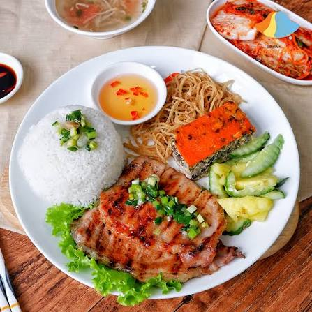
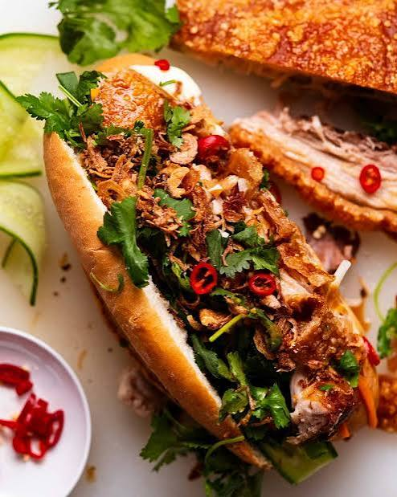
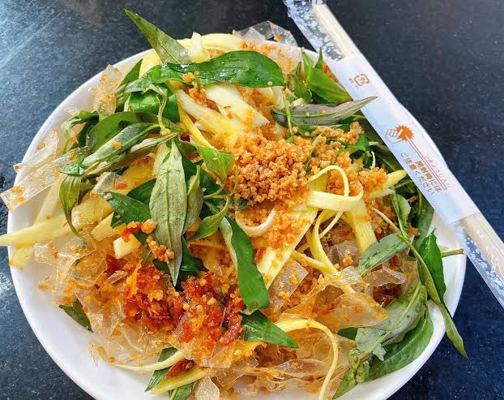

Trang chủ | Giới thiệu & Câu chuyện | Lịch trình Food Tour | Tin tức - Bài viết | Thư viện đa phương tiện | Liên hệ
"Ẩm thực Sài Gòn không cầu kỳ kiểu cách mà chinh phục thực khách bằng sự chân thành, hào sảng trong từng phần ăn và sự sáng tạo không ngừng của người dân bản xứ."

Điểm làm nên linh hồn của một đĩa cơm tấm Sài Gòn chính là sự hòa quyện hoàn hảo giữa hạt tấm tơi xốp, miếng sườn cốt lết nướng than hoa thơm lừng, sợi bì dai giòn, chả trứng hấp béo ngậy và chén nước mắm kẹo chua ngọt đặc trưng. Dù ở bất kỳ con hẻm nhỏ hay nhà hàng sang trọng nào, cơm tấm vẫn giữ trọn vẹn sức hút khó cưỡng.

Kế thừa lớp vỏ giòn rụm của bánh mì Pháp, người Sài Gòn đã biến tấu phần nhân bên trong trở nên phong phú với pa-tê gan béo thơm, bơ trứng gà, chả lụa, thịt nguội, đồ chua giòn ngọt cùng ngò rí và ớt tươi. Sự tiện lợi, nhanh gọn nhưng đầy đủ dinh dưỡng đã đưa bánh mì Sài Gòn trở thành một trong những món ăn đường phố ngon nhất thế giới.

Từ những xấp bánh tráng phơi sương cắt sợi kết hợp cùng xoài xanh bào sợi, khô bò đen, trứng cút, rau răm, đậu phộng rang và nước sốt sa tế tắc, bánh tráng trộn đã tạo nên một cơn sốt ẩm thực đường phố. Đây là món ăn vặt không thể thiếu trong những buổi chiều tan trường hay những cuộc trò chuyện rôm rả bên vỉa hè.
SAIGON FOOD TOUR - KHÁM PHÁ HƯƠNG VỊ SÀI GÒN